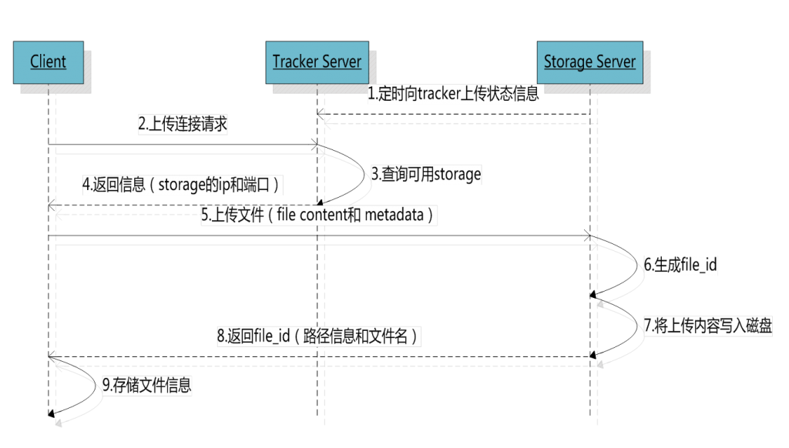
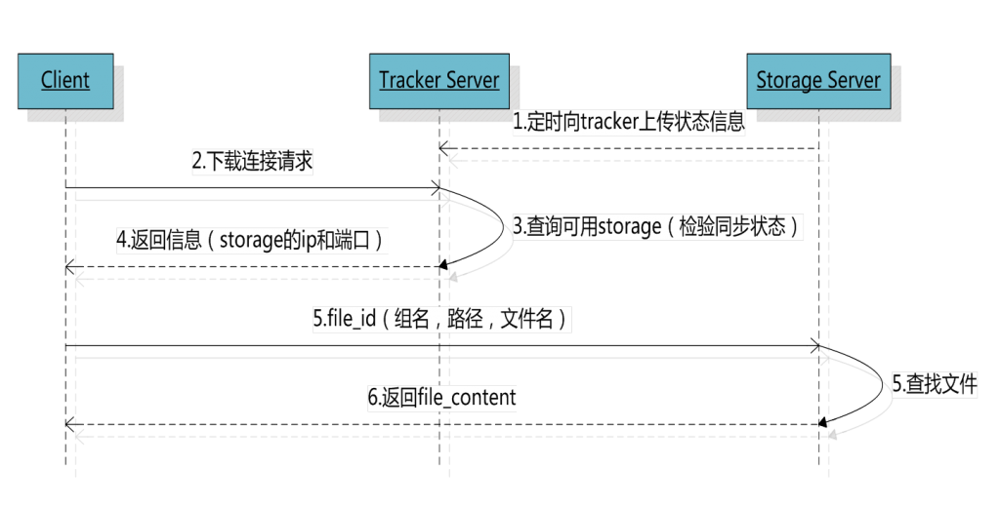
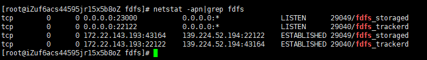
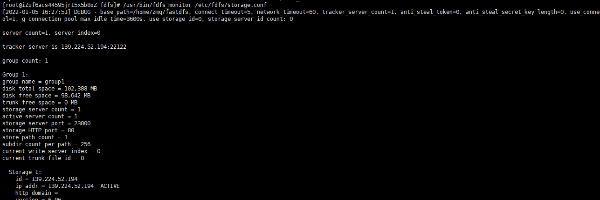
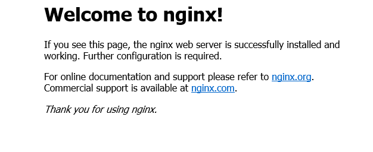
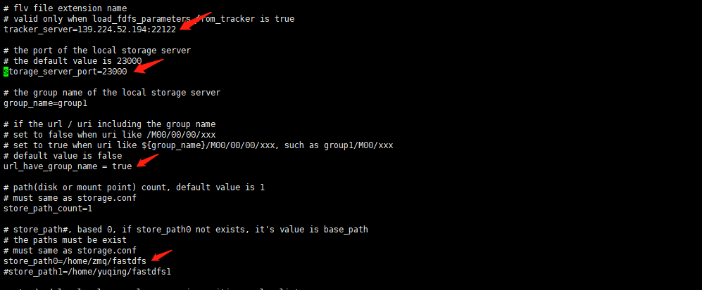
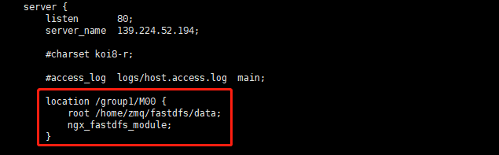

最近在做项目时发现文件上传下载用到了FastDFS，想到自己对这个还不熟悉，于是想自己在服务器上搭一下服务，趁机了解一下FastDFS。网上有许多关于FastDFS的搭建教程，但是没想到自己前后折腾了一整天才给弄好，踩了许多坑，呼，这里记录一下。
关于FastDFS
作为一款分布式文件管理系统，FastDFS 主要包括四个方面的功能：
- 文件存储
- 文件同步
- 文件上传
- 文件下载
这个方面的功能，基本上就能搞定我们常见的文件管理需求了。
下面这是一张来自 FastDFS 官网的系统架构图：
从上面这张图中我们可以看到，FastDFS 架构包括 Tracker 和 Storage 两部分，看名字大概就能知道，Tracker 用来追踪文件，相当于是文件的一个索引，而 Storage 则用来保存文件。
我们上传文件的文件最终保存在 Storage 上，文件的元数据信息保存在 Tracker 上，通过 Tracker 可以实现对 Storage 的负载均衡。
Storage 一般会搭建成集群，一个 Storage Cluster 可以由多个组构成，不同的组之间不进行通信，一个组又相当于一个小的集群，组由多个 Storage Server 组成，组内的 Storage Server 会通过连接进行文件同步来保证高可用。
FastDFS上传文件
首先客户端请求Tracker服务获取到存储服务器的ip地址和端口，然后客户端根据返回的IP地址和端口号请求上传文件，存储服务器接收到请求后生产文件，并且将文件内容写入磁盘并返回给客户端file_id、路径信息、文件名等信息，客户端保存相关信息上传完毕。

FastDFS下载文件
客户端带上文件名信息请求Tracker服务获取到存储服务器的ip地址和端口，然后客户端根据返回的IP地址和端口号请求下载文件，存储服务器接收到请求后返回文件给客户端。

FastDFS 安装
条件有限，就将Tracker和Storage装在同一台服务器上了。
Tracker安装
1.由于FastDFS是由C语言开发，所以需要安装gcc环境
1 | yum install gcc-c++ |
2.安装依赖库
1 | 安装libevent库 |
3.下载安装包
1 | wget https://github.com/happyfish100/fastdfs/archive/V6.06.tar.gz |
安装成功后，执行如下命令，将安装目录内 conf 目录下的配置文件拷贝到 /etc/fdfs 目录下：
1 | cd conf/ |
4.配置Tracker
接下来进入 /etc/fdfs/ 目录下进行配置：
打开 tracker.conf 文件：
1 | vi tracker.conf |
修改如下配置：
1 | base_path=/home/zmq/fastdfs #tracker存储data和log的根路径，必须提前创建好 |
5.启动
接下来执行如下命令启动 Tracker：
1 | /usr/bin/fdfs_trackerd /etc/fdfs/tracker.conf start |
重启命令：
1 | /usr/bin/fdfs_trackerd /etc/fdfs/tracker.conf restart |
如此之后，我们的 Tracker 就算安装成功了。
Storage安装
由于我将Storage和Tracker安装在同一台服务器上，相当于安装 Tracker 时已经安装了 Storage 了，所以这里只需要进行配置即可
1.配置Storage
进入/etc/fdfs目录，编辑storage.conf：vi storage.conf，修改相关参数：
1 | base_path=/home/zmq/fastdfs #storage存储data和log的跟路径，必须提前创建好 |
这里有个坑，如果是云服务器，在服务器上自测时，要把tracker_server地址改为服务器内网地址，如果使用java客户端上传时，需要将tracker_server改为服务器外网地址。
配置完成后，执行如下命令启动 Storage：
1 | /usr/bin/fdfs_storaged /etc/fdfs/storage.conf start |
重启命令：
1 | /usr/bin/fdfs_storaged /etc/fdfs/storage.conf restart |
查看端口情况：
1 | netstat -apn|grep fdfs |

通过monitor来查看storage是否成功绑定：
1 | /usr/bin/fdfs_monitor /etc/fdfs/storage.conf |

至此，storage服务器配置完成。
配置客户端
编辑/etc/fdfs/client.conf文件,修改如下配置：
1 | base_path=/home/zmq/fastdfs |
配置完成后，进行初步测试：编写一个文件
#里面随便写点数据
vim t.txt
执行客户端上传命令进行测试：
1 | /usr/bin/fdfs_upload_file /etc/fdfs/client.conf t.txt |
返回的路径就是文件的存储目录，在/home/zmq/fastdfs/data目录下
至此，测试成功
想在web段查看上次存储的文件，需要安装nginx和fastdfs-nginx-module
Nginx安装
安装Nginx
- 首先下载 Nginx
1 | wget http://nginx.org/download/nginx-1.17.0.tar.gz |
然后解压下载的目录，进入解压目录中，在编译安装之前，需要安装两个依赖：
1 | yum -y install pcre-devel |
然后开始编译安装：
1 | ./configure |
装好之后，默认安装位置在 ：
1 | /usr/local/nginx/sbin/nginx |
进入该目录的conf目录中，修改nginx.conf中的server_name和port。
进入到该目录的 sbin 目录下，执行 如下命令nginx ：
1 | ./nginx |
如果修改了 Nginx 配置，则可以通过如下命令重新加载 Nginx 配置文件：
1 | ./nginx -s reload |
Nginx 启动成功之后，在浏览器中直接访问 Nginx 地址：

看到如上页面，表示 Nginx 已经安装成功了。如果访问不到，检查一下安全组和防火墙有没有添加80端口。
安装fastdfs-nginx-module
1 | cd /usr/local |
然后将 /usr/local/fastdfs-nginx-module-1.22/src/mod_fastdfs.conf 文件拷贝到 /etc/fdfs/ 目录下，并修改该文件的内容,将tracker_server改为对应的ip，将url_hava_group_name改为true，store_path0保持和storage.conf一样
1 | cp /usr/local/fastdfs-nginx-module-1.22/src/mod_fastdfs.conf /etc/fdfs/ |

接下来，回到下载的 nginx 安装文件的解压目录中，执行如下命令，重新配置编译安装：
1 | ./configure --add-module=/usr/local/fastdfs-nginx-module-1.22/src |
安装完成后，修改 nginx 的配置文件，如下：
1 | vi /usr/local/nginx/conf/nginx.conf |

再进入sbin启动Nginx
1 | cd /usr/local/nginx/sbin |
通过浏览器去访问我上传的文件发现是404，查看nginx日志发现nginx 的错误日志中一直报： unknown directive "ngx_fastdfs_module" in /usr/local/nginx/conf/nginx.conf:70，这里可折腾了我好久，上网查了下发现原来需要用： systemctl restart nginx 命令重启nginx，如果只是重新加载 nginx.conf 文件（nginx -s reload）是不管用的。。。